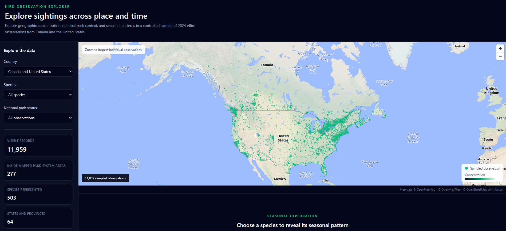

Bird Observation Explorer
Interactive geospatial explorer for sampled eBird observations across Canada and the United States. Combines a validated Python/GeoPandas data pipeline with GeoParquet, DuckDB WASM, MapLibre, Deck.gl, and D3 to explore spatial concentration, park-system context, and seasonal patterns.
- Automated acquisition and validation of eBird and government spatial data
- GeoPandas point-in-polygon analysis with GeoParquet output
- Interactive density and point mapping with MapLibre and Deck.gl
- D3 seasonal visualization with filtering and scientific-data caveats
- ESLint, Ruff, automated tests, CI, and GitHub Pages deployment
Vue
TypeScript
MapLibre
Deck.gl
D3
Python
GeoPandas
GeoParquet
DuckDB WASM